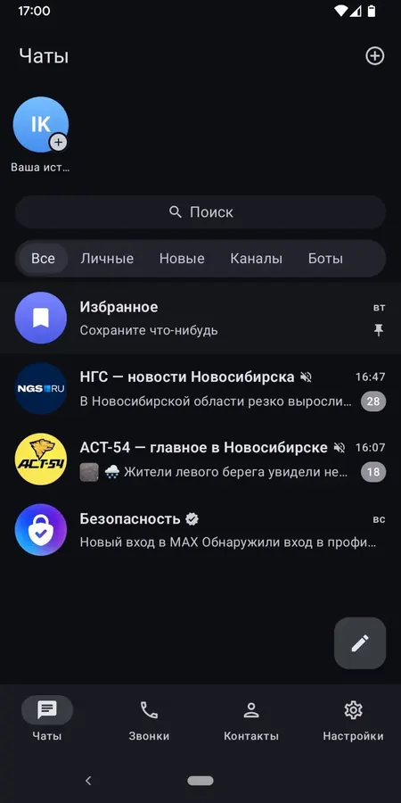

Режим призрака
Не показывайте, что вы в сети и печатаете, и читайте без отметок о прочтении.


Не показывайте, что вы в сети и печатаете, и читайте без отметок о прочтении.
Приложение не отправляет разработчикам ни данные, ни отчёты о сбоях. Всё нужное для работы хранится у вас на устройстве.
iOS на SwiftUI, Android и Desktop на Compose, никаких веб-обёрток.
Разложите чаты по папкам: работа отдельно, личное отдельно.
Работают так же, как в официальном клиенте.
Голосовые и видеозвонки через инфраструктуру MAX.
Maxly не собирает аналитику. Сообщения и звонки идут через серверы MAX, как и в официальном приложении. Клиент неофициальный и не связан с MAX.